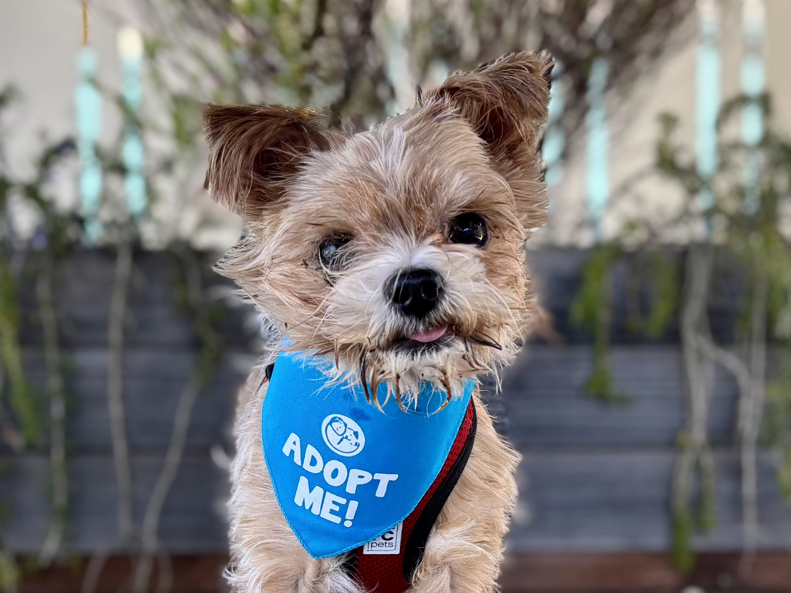

~13 years · Male · 8 lb · Shih Tzu / Poodle mix
Breeze is the kind of senior dog that makes you remember why you love this breed. He is gentle, low-energy, gets along with other dogs, and has the soft white coat of a dog who has been groomed by people who loved him. He came to us when his guardian moved into care, and last month a quiet retiree fell in love and took him home.

More of Breeze